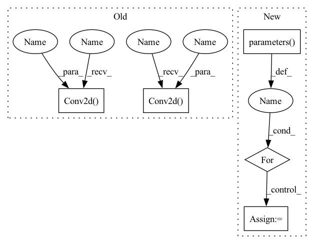

Pattern ID :12263

Before Change
elif model_arch == "vgg19":
train_model = torchvision.models.vgg19(pretrained=pre_trained)
train_model.features[0] = nn.Conv2d(input_channels,64, kernel_size=(3, 3), stride=(1, 1), padding=(1, 1))
train_model.classifier[6] = nn.Sequential(
nn.Linear(in_features=4096, out_features=output_classes, bias=True))
elif model_arch == "resnet50" or model_arch == "resnet101" or model_arch == "resnet152" or model_arch == "wide_resnet50_2" or model_arch == "wide_resnet101_2":
if model_arch == "resnet50":
train_model = torchvision.models.resnet50(pretrained=pre_trained)
elif model_arch == "resnet101":
train_model = torchvision.models.resnet101(pretrained=pre_trained)
elif model_arch == "resnet152":
train_model = torchvision.models.resnet152(pretrained=pre_trained)
elif model_arch == "wide_resnet50_2":
train_model = torchvision.models.wide_resnet50_2(pretrained=pre_trained)
elif model_arch == "wide_resnet101_2":
train_model = torchvision.models.wide_resnet101_2(pretrained=pre_trained)
train_model.conv1 = nn.Conv2d(input_channels,64, kernel_size=(7, 7), stride=(2, 2), padding=(3, 3), bias=False)
fc_inputs = train_model.fc.in_features
train_model.fc = nn.Sequential(
nn.Linear(fc_inputs, output_classes))
After Change
train_model.fc = nn.Linear(in_features=2048, out_features=output_classes, bias=True)
for param in train_model.parameters():
param.requires_grad = unfreeze_weights
return train_model
In pattern: SUPERPATTERN
Frequency: 3
Non-data size: 5
Instances
Fragment ID: 41567386
Project Name: radtorch/radtorch
Commit Name: 2d7a1c5497b52ae27d38f6d9f7fce74e804ab533
Time: 2020-02-22
Author: elbanan@users.noreply.github.com
File Name: radtorch/modelsutils.py
M Class Name: AnonimousClass
N Class Name: AnonimousClass
M Method Name: create_model(4)
N Method Name: create_model(4)
M Parent Class:
N Parent Class:
M File Name: radtorch/modelsutils.py
N File Name: radtorch/modelsutils.py
M Start Line: 80
M End Line: 133
N Start Line: 80
N End Line: 141
'>
Before Change
elif model_arch == "vgg19":
train_model = torchvision.models.vgg19(pretrained=pre_trained)
train_model.features[0] = nn.Conv2d(input_channels,64, kernel_size=(3, 3), stride=(1, 1), padding=(1, 1))
train_model.classifier[6] = nn.Sequential(
nn.Linear(in_features=4096, out_features=output_classes, bias=True))
elif model_arch == "resnet50" or model_arch == "resnet101" or model_arch == "resnet152" or model_arch == "wide_resnet50_2" or model_arch == "wide_resnet101_2":
if model_arch == "resnet50":
train_model = torchvision.models.resnet50(pretrained=pre_trained)
elif model_arch == "resnet101":
train_model = torchvision.models.resnet101(pretrained=pre_trained)
elif model_arch == "resnet152":
train_model = torchvision.models.resnet152(pretrained=pre_trained)
elif model_arch == "wide_resnet50_2":
train_model = torchvision.models.wide_resnet50_2(pretrained=pre_trained)
elif model_arch == "wide_resnet101_2":
train_model = torchvision.models.wide_resnet101_2(pretrained=pre_trained)
train_model.conv1 = nn.Conv2d(input_channels,64, kernel_size=(7, 7), stride=(2, 2), padding=(3, 3), bias=False)
fc_inputs = train_model.fc.in_features
train_model.fc = nn.Sequential(
nn.Linear(fc_inputs, output_classes))
elif model_arch == "inception_v3":
train_model = torchvision.models.inception_v3(pretrained=pre_trained)
train_model.Conv2d_1a_3x3.conv = nn.Conv2d(input_channels, 32, kernel_size=(3, 3), stride=(2, 2), bias=False)
train_model.fc = nn.Linear(in_features=2048, out_features=output_classes, bias=True)
return train_model
After Change
train_model.fc = nn.Linear(in_features=2048, out_features=output_classes, bias=True)
for param in train_model.parameters():
param.requires_grad = unfreeze_weights
return train_model
'>
Fragment ID: 41567370
Project Name: radtorch/radtorch
Commit Name: 2d7a1c5497b52ae27d38f6d9f7fce74e804ab533
Time: 2020-02-22
Author: elbanan@users.noreply.github.com
File Name: radtorch/modelsutils.py
M Class Name: AnonimousClass
N Class Name: AnonimousClass
M Method Name: create_model(4)
N Method Name: create_model(4)
M Parent Class:
N Parent Class:
M File Name: radtorch/modelsutils.py
N File Name: radtorch/modelsutils.py
M Start Line: 80
M End Line: 133
N Start Line: 80
N End Line: 141
'>
Before Change
def __init__(self, depth=18, pretrained=True):
super(ResNetBackbone, self).__init__()
self.inplanes = 64
self.dilation = 1
self.groups = 1
self.base_width = 64
if pretrained:
self.stem = None
self.conv1 = nn.Conv2d(3, self.inplanes, kernel_size=7, stride=2, padding=3, bias=False)
self.bn1 = nn.BatchNorm2d(self.inplanes)
self.relu = nn.ReLU(inplace=True)
else:
self.stem = nn.Sequential(
nn.Conv2d(3, self.inplanes, kernel_size=3, stride=2, padding=1, bias=False),
nn.BatchNorm2d(self.inplanes),
nn.ReLU(inplace=True),
nn.Conv2d(self.inplanes, self.inplanes, kernel_size=3, stride=1, padding=1, bias=False),
nn.BatchNorm2d(self.inplanes),
nn.ReLU(inplace=True),
nn.Conv2d(self.inplanes, self.inplanes, kernel_size=3, stride=1, padding=1, bias=False),
nn.BatchNorm2d(self.inplanes),
nn.ReLU(inplace=True),
)
After Change
// freeze params
for module in [self.conv1, self.bn1, self.layer1]:
module.eval()
for param in module.parameters():
param.requires_grad = False
def load_pre_trained_weights(self):
print("Loading Pytorch pretrained weights...")
'>
Fragment ID: 41567372
Project Name: zhangheng19931123/mutualguide
Commit Name: e34b6b0002f1571fad0fa9bf00707f377f5fc431
Time: 2022-07-01
Author: zhanghengdev@outlook.com
File Name: models/backbone/resnet_backbone.py
M Class Name: ResNetBackbone
N Class Name: ResNetBackbone
M Method Name: __init__(3)
N Method Name: __init__(3)
M Parent Class: nn.Module
N Parent Class: nn.Module
M File Name: models/backbone/resnet_backbone.py
N File Name: models/backbone/resnet_backbone.py
M Start Line: 58
M End Line: 88
N Start Line: 133
N End Line: 170